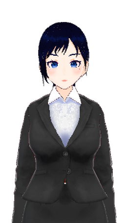
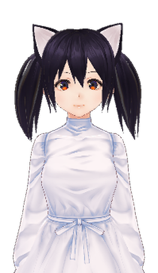
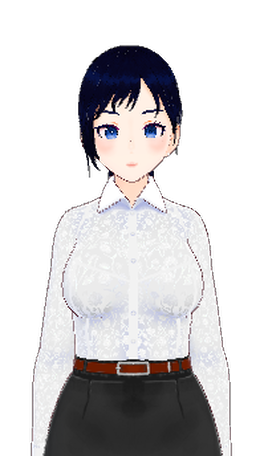
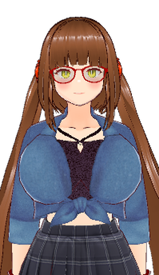
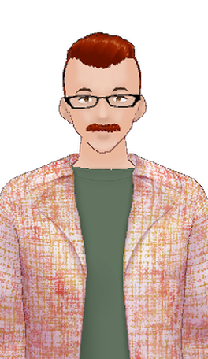
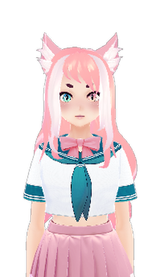
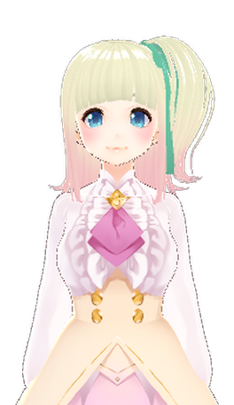

일하는 모습이 보입니다
생각 중, 작업 중, 끝남, 확인 필요. 상태마다 표정이 달라지고 말풍선에 한 줄로 적힙니다.
무료 · Windows
AI가 일하는 동안 지금 무엇을 하고 있는지 표정과 말풍선으로 알려 줍니다. 말을 걸면 대답하고, 달력과 메모와 타이머를 곁에 둡니다.
쓰려면 Claude Code가 설치되어 있고 본인 Claude 계정(유료 요금제 또는 API 이용료)으로 로그인되어 있어야 합니다. 나도비서는 무료이지만 Claude 이용료는 별도입니다. 나도비서는 Anthropic과 관계없는 독립 앱입니다.

AI에게 일을 맡기고 다른 창에서 일하세요. 끝났는지, 내 확인을 기다리는지 캐릭터가 먼저 알려 줍니다.
생각 중, 작업 중, 끝남, 확인 필요. 상태마다 표정이 달라지고 말풍선에 한 줄로 적힙니다.
캐릭터를 눌러 바로 물어보세요. 파일 보기, 글자 읽기, 일 맡기기도 여기서 시작합니다.
달력, 메모, 집중 타이머. 자주 쓰는 아이콘은 길게 눌러 순서를 바꿀 수 있습니다.
하루 일과 속에서 나도비서가 하는 일을 상황별로 적었습니다.
Claude Code에 코드 수정이나 문서 정리를 시켜 두면 몇 분씩 걸립니다. 그동안 터미널 창을 계속 들여다볼 필요가 없습니다. 캐릭터가 생각 중인지, 파일을 고치는 중인지, 명령을 실행하는 중인지 표정과 말풍선으로 보여 줍니다.
작업이 끝나면 끝났다고 알려 주므로, 다른 창에서 일하다가 화면 한쪽만 슬쩍 보면 됩니다.
AI가 명령을 실행하기 전에 허락을 구하며 멈춰 있는데, 모르고 한참 뒤에야 돌아온 적이 있을 겁니다. 나도비서는 확인이 필요해지는 순간 표정을 바꾸고 말풍선으로 알립니다.
짧고 단순한 명령은 내용을 그대로 보여 주고 그 자리에서 답할 수 있습니다. 길거나 여러 개가 이어진 명령은 내용을 줄여 보여 주지 않고, Claude 창에서 직접 보고 답하라고 안내합니다.
엑셀 함수 하나, 메일 문장 하나, 낯선 용어 하나. 캐릭터를 누르면 입력칸이 바로 열리고, 답은 말풍선과 카드로 돌아옵니다. 하던 일의 창을 떠나지 않아도 됩니다.
지난 대화는 내 PC에 남아 있어 이어서 물을 수 있고, 기억하기를 켜 두면 내 취향과 최근 대화를 참고해 같은 추천을 되풀이하지 않습니다.
문서 파일을 보여 주고 요약이나 점검을 부탁할 수 있습니다. 복사가 안 되는 오류 창이나 그림 속 글자는 화면의 한 부분을 잡아 글자로 읽어 냅니다.
글자 읽기는 AI를 거치지 않고 내 PC 안에서 처리합니다.
작업 폴더를 정하고 “종류별로 정리해 줘”, “회의록들을 요약해서 문서로 만들어 줘”처럼 말하면 됩니다. AI는 먼저 무엇을 어떻게 바꿀지 계획만 세워 보여 줍니다.
내가 “실행”을 눌러야 파일이 바뀌고, 정한 폴더 밖은 건드리지 않습니다. 실행한 뒤에는 되돌리기를 할 수 있습니다.
달력에 일정을 적고, 떠오른 것은 메모로 남기고, 집중 타이머로 시간을 끊어 씁니다. 이 세 가지는 AI 연결 없이도 동작합니다.
브리핑을 누르면 오늘 일정과 메모, AI가 해 둔 작업을 한 장으로 모아 줍니다. 모두 내 PC에만 저장합니다.
머리·눈·옷 색을 바꿀 수 있고, 가지고 있는 VRM 캐릭터 파일을 추가할 수도 있습니다.






Claude Code를 설치하고 본인 계정으로 로그인합니다. 사용 요금은 본인 계정에 청구됩니다.
Microsoft Store에 출시되면 위 버튼으로 설치합니다. 나도비서 회원가입은 없습니다.
캐릭터를 누르고 이름을 지어 주세요. 말을 걸 때마다 내 Claude 계정의 사용량이 소모됩니다.
터미널에서 쓰는 Claude Code의 작업 상태와 확인 요청을 캐릭터로 보려면 옵션의 “AI 연결”에서 “작업 표시 연결”을 한 번 누르면 됩니다. 말 걸기, 달력, 메모, 타이머는 연결 없이 바로 쓸 수 있습니다.
일정·메모·설정·대화 기록은 내 PC에 저장하며 나도랩스 서버로 보내지 않습니다. AI에게 보낸 내용은 내 PC의 Claude Code를 거쳐 내 Claude 계정으로 전달되고, 그 처리에는 Anthropic의 약관과 방침이 적용됩니다. 설치와 업데이트는 Microsoft Store가 맡습니다. 개인정보처리방침
AI의 답은 틀릴 수 있습니다. 파일을 옮기거나 새로 만드는 일은 실행 전에 확인을 받지만, 중요한 파일은 따로 보관해 두세요. 보안 프로그램이 입력 확인 기능을 의심할 수 있습니다.